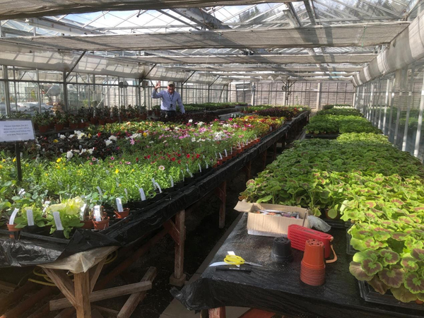
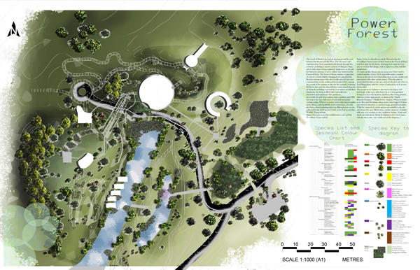

EducationOn this page I go over my education, starting at my Level 3 in Horticulture from Broomfield College in Derbyshire to my BA in Landscape Architecture from the University of Gloucestershire in Cheltenham to my currently ongoing MSc in Computing from Cardiff University in Cardiff. |
Level 3 in HorticultureBroomfield College, DerbyshireI studied Horticulture at Broomfield College in Derbyshire from 2016-2018. I studied a range of subjects from plant identification to garden design and worked on the grounds of the estate there. Part of this involved time at the glass houses, where we propagated plants and I personally repoted the Orchid collection after the soil quality had degraded. |

|
BA in Landscape ArchitectureUniversity of Gloucestershire, CheltenhamFrom 2019 to 2021 I studied Landscape Architecture at the University of Gloucestershire. Whilst here I learned how to use the adobe suite and AutoCad to create designs for assignments. For example, I designed a ‘home for the lost’, a place where people who are looking for lost people, those who are lost or friends and relatives can meet, heal and grow. I used a series of glowing benches, local Cattle and an education centre in the design. |

|
MSc in ComputingCardiff University, CardiffFrom September 2023 I started on an MSc in Computing at Cardiff University. This has taught me a lot about coding, including the HTML and CSS used here, as well as Python and JavaScript. I have a long way to go but I am enjoying the journey so far and look forward to using these skills at work. |
|
{{ comment[1] }}: {{ comment[2] }}